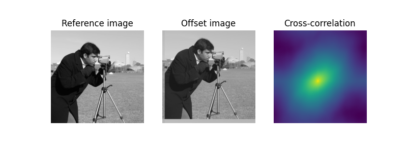
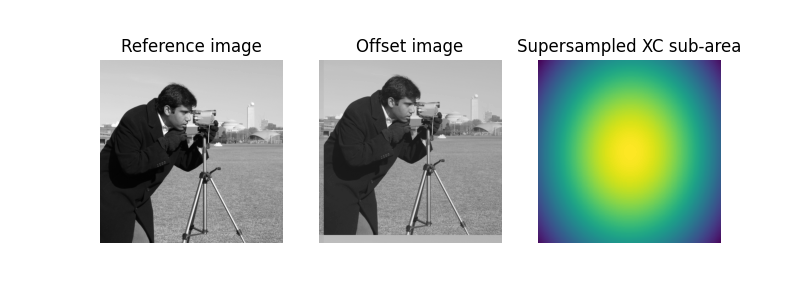

Note
Go to the end to download the full example code or to run this example in your browser via Binder
Image Registration#
In this example, we use phase cross-correlation to identify the relative shift between two similar-sized images.
The phase_cross_correlation function uses cross-correlation in
Fourier space, optionally employing an upsampled matrix-multiplication
DFT to achieve arbitrary subpixel precision [1].
- 
- 
Known offset (y, x): (-22.4, 13.32)
Detected pixel offset (y, x): [ 22. -13.]
Detected subpixel offset (y, x): [ 22.4 -13.32]
import numpy as np
import matplotlib.pyplot as plt
from skimage import data
from skimage.registration import phase_cross_correlation
from skimage.registration._phase_cross_correlation import _upsampled_dft
from scipy.ndimage import fourier_shift
image = data.camera()
shift = (-22.4, 13.32)
# The shift corresponds to the pixel offset relative to the reference image
offset_image = fourier_shift(np.fft.fftn(image), shift)
offset_image = np.fft.ifftn(offset_image)
print(f'Known offset (y, x): {shift}')
# pixel precision first
shift, error, diffphase = phase_cross_correlation(image, offset_image)
fig = plt.figure(figsize=(8, 3))
ax1 = plt.subplot(1, 3, 1)
ax2 = plt.subplot(1, 3, 2, sharex=ax1, sharey=ax1)
ax3 = plt.subplot(1, 3, 3)
ax1.imshow(image, cmap='gray')
ax1.set_axis_off()
ax1.set_title('Reference image')
ax2.imshow(offset_image.real, cmap='gray')
ax2.set_axis_off()
ax2.set_title('Offset image')
# Show the output of a cross-correlation to show what the algorithm is
# doing behind the scenes
image_product = np.fft.fft2(image) * np.fft.fft2(offset_image).conj()
cc_image = np.fft.fftshift(np.fft.ifft2(image_product))
ax3.imshow(cc_image.real)
ax3.set_axis_off()
ax3.set_title("Cross-correlation")
plt.show()
print(f'Detected pixel offset (y, x): {shift}')
# subpixel precision
shift, error, diffphase = phase_cross_correlation(image, offset_image,
upsample_factor=100)
fig = plt.figure(figsize=(8, 3))
ax1 = plt.subplot(1, 3, 1)
ax2 = plt.subplot(1, 3, 2, sharex=ax1, sharey=ax1)
ax3 = plt.subplot(1, 3, 3)
ax1.imshow(image, cmap='gray')
ax1.set_axis_off()
ax1.set_title('Reference image')
ax2.imshow(offset_image.real, cmap='gray')
ax2.set_axis_off()
ax2.set_title('Offset image')
# Calculate the upsampled DFT, again to show what the algorithm is doing
# behind the scenes. Constants correspond to calculated values in routine.
# See source code for details.
cc_image = _upsampled_dft(image_product, 150, 100, (shift*100)+75).conj()
ax3.imshow(cc_image.real)
ax3.set_axis_off()
ax3.set_title("Supersampled XC sub-area")
plt.show()
print(f'Detected subpixel offset (y, x): {shift}')
Total running time of the script: (0 minutes 1.099 seconds)